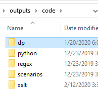

code Folder
The central repository for program code and transformation scripts.
All programming code and stylesheets are stored in the outputs/code folder on GitHub.

Primary Folders
- dp
- Material kindly shared with us from Distributed Proofreading and Distributed Proofreading Canada.
- python
- Python scripts for creating entry files from page files and other data processing tasks.
- regex
- A collection of useful regex scripts for manipulating textual data in our files.
- scenarios
- Oxygen XML Editor stores certain parameters for each xml-project in .scenario files.
- xslt
- XSLT scripts are used to transform files to and from the TEI format. They are also used to modify large volumes of XML data.